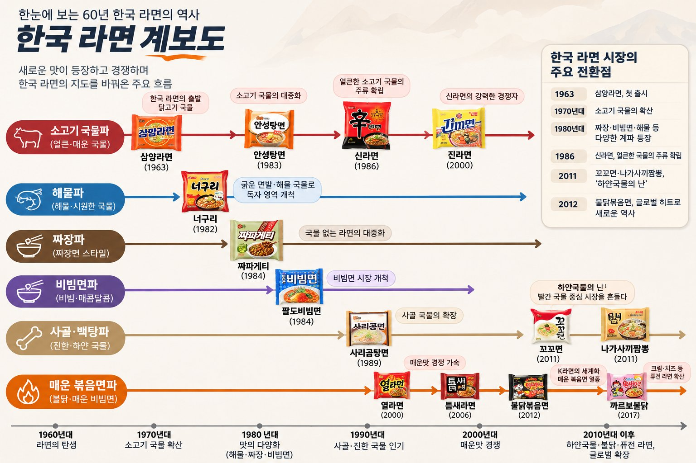

[라면의 계보] 라면에도 계보가 있다? 60년 한국 라면의 역사를 데이터로 그리다
프로딴짓러
라면에도 계보가 있다? 한국 라면 60년의 역사를 정리해봤습니다.
한국인의 소울푸드인 라면에도 나름의 계파가 있습니다. 조선시대 붕당정치처럼 주류 세력이 등장하고, 새로운 세력이 도전하고, 때로는 기존의 질서를 뒤흔드는 반란이 일어나기도 했습니다.
1963년 삼양라면이 처음 등장했을 때만 해도 한국 라면의 출발점은 닭고기 국물이었습니다. 그러다 1970년대 소고기 국물이 새로운 흐름을 만들었고, 1983년 안성탕면을 거쳐 1986년 신라면이 등장하면서 얼큰한 소고기 국물이 한국 라면의 주류로 자리 잡았습니다.
하지만 주류에 도전하는 세력도 만만치 않았습니다.
1982년 너구리는 굵은 면발과 해물 국물을 앞세워 독자적인 영역을 개척했습니다. 1984년에는 짜파게티와 팔도비빔면이 등장하면서 국물 없이 먹는 라면이 대중화됐습니다. 국물이 있어야 라면이라는 통념에 도전한 셈입니다.
이후에도 변화는 계속됐습니다. 사리곰탕면이 구수한 사골 국물의 영역을 넓혔고, 열라면과 틈새라면은 매운맛 경쟁을 이끌었습니다. 진라면은 신라면의 강력한 경쟁자로 성장했습니다.
2011년에는 이른바 '하얀국물의 난'이 일어났습니다. 꼬꼬면과 나가사끼짬뽕이 등장하면서 수십 년 동안 이어진 빨간 국물 중심의 시장을 뒤흔들었습니다. 돌풍은 오래가지 못했지만, 라면의 국물이 반드시 빨개야 할 필요는 없다는 인식을 남겼습니다.
그리고 2012년 불닭볶음면이 등장합니다. 당시에는 지나치게 맵다는 평가도 있었지만, 유튜브를 타고 전 세계로 퍼지면서 한국 라면의 새로운 역사를 쓰고 있습니다. 이후 까르보불닭과 신라면 툼바 등 크림·치즈를 결합한 퓨전 라면까지 등장했습니다.
이렇게 되짚어보니 한국 라면의 역사가 꽤 흥미롭더군요. 단순히 신제품이 계속 나온 것이 아니라, 새로운 맛이 등장하고 기존 제품과 경쟁하면서 시장의 흐름 자체가 바뀌어 온 과정이었습니다.
그래서 이 역사를 한눈에 볼 수 있는 인터랙티브 사이트를 만들어봤습니다.
이름은 '라면의 계보'입니다.
조선시대 붕당정치 계보도에서 아이디어를 얻었습니다. 어떤 라면이 새로운 계파를 만들었고, 어떤 제품이 그 흐름을 이어받았는지, 또 어떤 제품끼리 경쟁했는지를 계보도로 표현했습니다.
한국 라면의 역사를 1963년부터 현재까지 따라가면서 소고기 국물파, 해물파, 사골·백탕파, 짜장파, 비빔면파, 매운 볶음면파 등의 탄생과 변화를 살펴볼 수 있습니다. 주요 라면을 클릭하면 제품의 역사와 특징, 다른 제품과의 관계도 확인할 수 있습니다.
계보도만 만들기에는 아쉬워 몇 가지 기능을 더 넣었습니다.
① 라면 조합 연구소
라면 두 개를 섞으면 어떤 맛이 날까요? 짜파게티와 너구리를 섞은 '짜파구리'처럼 라면을 조합해 먹는 사람들이 많습니다. 두 제품을 선택하면 국물과 면의 특성, 매운맛 등을 토대로 궁합을 분석하고 조리법을 제안하도록 했습니다. 스프 비율과 물의 양도 조절할 수 있습니다. 물론 실제로 먹어본 결과가 아니라 데이터와 규칙에 따른 예상입니다.
② 라면 랭킹
어떤 라면이 가장 매울까요? 나트륨이 가장 많은 라면은 무엇일까요? 열량이 높은 라면과 낮은 라면은 얼마나 차이가 날까요?
제조사 공개 자료와 한국소비자원 시험 결과 등을 활용해 매운맛, 나트륨, 열량, 중량, 조리시간, 출시연도 등 여러 기준으로 라면을 비교할 수 있도록 했습니다. 특히 매운맛은 스코빌지수와 캡사이신 실측 함량의 기준이 달라 구분해서 보여주도록 했습니다.
③ 라면 도감
농심, 삼양식품, 오뚜기, 팔도뿐 아니라 풀무원, 하림, 편의점 자체 브랜드(PB) 제품과 과거에 출시됐다가 단종된 라면까지 모았습니다.
제품명이나 제조사로 검색할 수 있고, 국물·비국물 여부와 매운맛 등을 기준으로 원하는 라면을 찾아볼 수 있습니다. 제품별 영양성분과 조리법 등도 담았습니다.
라면 정보를 수집하면서 생각보다 어려웠던 부분은 제품의 출시연도와 과거 기록을 확인하는 일이었습니다. 오랫동안 판매된 제품은 중간에 맛이나 포장이 바뀌기도 했고, 지금은 사라진 제품의 자료를 찾기도 쉽지 않았습니다.
무엇보다 계보도를 만드는 것이 어려웠습니다. 단순히 맛이 비슷하다고 해서 후속 제품이라고 할 수는 없기 때문입니다. 실제 제품의 계승 관계와 같은 계열의 맛, 시장에서 경쟁했던 관계를 구분하는 데 신경을 썼습니다.
라면의 계보는 아직 완성형이라기보다 계속 자료를 보완해 나가는 프로젝트입니다. 빠진 제품이나 잘못된 정보가 있을 수 있습니다. 그런 부분을 알려주시면 확인해서 반영하겠습니다.
경제·금융 데이터를 주로 다루다가 이번에는 조금 다른 소재를 가지고 놀아봤습니다. 평소 좋아하는 라면을 데이터로 들여다보니 생각보다 흥미로운 이야기가 많았습니다.
여러분이 가장 좋아하는 라면은 무엇인가요? 그리고 어떤 라면이 한국 라면의 역사에서 가장 중요한 역할을 했다고 생각하시나요?
한번 둘러보시고 의견 부탁드립니다.